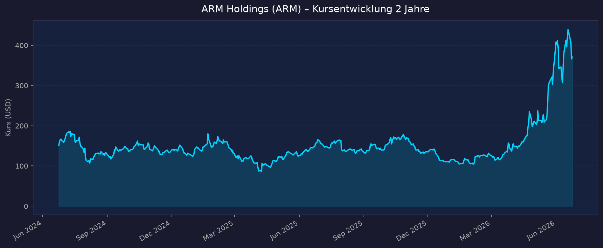
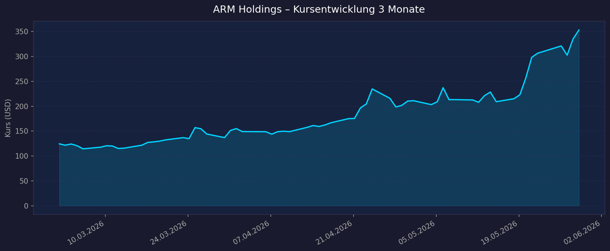

📈 1. Kursentwicklung
Aktueller Kurs: $353,29 | 52W-Hoch: $356,45 | 52W-Tief: $100,02 | Beta: 3,41
Chart – 2 Jahre

Chart – 3 Monate

| Zeitraum | Kurs Start | Kurs Ende | Veränderung |
|---|---|---|---|
| 2 Jahre | $120,73 (Mai 2024) | $353,29 | +192,6 % |
| 3 Monate | $124,37 (Mär 2026) | $353,29 | +184,1 % |
| 52-Wochen-Hoch | — | $356,45 | — |
| 52-Wochen-Tief | — | $100,02 | — |
🔥 Bemerkung: Die Aktie hat sich in nur 3 Monaten fast verdreifacht – getrieben durch die AGI CPU Ankündigung, starke Q4-Zahlen und massive Analystenupgrades. +177 % YTD 2026.
Marktkapitalisierung: ~$377 Mrd. (Top-20 US-Börsenunternehmen)
💹 2. KGV-Entwicklung (Kurs-Gewinn-Verhältnis)
Aktuelles KGV (trailing): ~416x | Forward-KGV: ~116x (Geschäftsjahr FY2027)
| Zeitraum | KGV (trailing) | Einordnung |
|---|---|---|
| Aktuell (Mai 2026) | ~416x | Extrem hoch – Wachstumsprämie |
| Ende 2025 (Dez) | ~146x | Historisch niedrigster Wert FY2026 |
| Mär 2025 | ~142x | Tiefpunkt der letzten 2 Jahre |
| FY2026 Jahresdurchschnitt | ~179x | Deutlich über Branchenschnitt |
| Dez 2023 (kurz nach IPO) | ~1.074x | Absolutes Peak nach IPO |
Branchendurchschnitt Semiconductor IP: 30–50x (trailing P/E)
Bewertung: Das Trailing-KGV von 416x wirkt astronomisch, spiegelt aber die extrem niedrigen GAAP-Gewinne (hohe aktienbasierte Vergütungen) wider. Das Forward-KGV von ~116x ist realistischer und zeigt das erwartete Gewinnwachstum. ARM wird als hochwertige Wachstumsaktie mit Preisaufschlag bewertet – vergleichbar mit NVIDIA in frühen KI-Phasen.
💰 3. Sales Multiple (Kurs-Umsatz-Verhältnis / P/S)
Aktuelles P/S-Verhältnis: 76,7x (FY2026 Revenue: $4,92 Mrd.)
| Zeitraum | P/S Ratio (geschätzt) | Einordnung |
|---|---|---|
| Aktuell (Mai 2026) | 76,7x | Sehr hoch |
| Vor 3 Monaten (Mär 2026) | ~29x | Vor dem Rally-Schub |
| Vor 12 Monaten (Mai 2025) | ~28x | 52W-Tief-Phase |
| Vor 24 Monaten (Mai 2024) | ~39x | Post-IPO-Bewertung |
Historische P/S-Werte sind Näherungswerte basierend auf Kursniveau und Jahresumsätzen.
Trend: Das P/S-Multiple hat sich durch den extremen Kursanstieg im Mai 2026 von ~29x auf ~77x mehr als verdoppelt – eine der stärksten kurzfristigen Bewertungsausweitungen im Halbleitersektor. Selbst für KI-Premium-Aktien ist 77x P/S historisch außergewöhnlich.
📊 4. Handelsvolumen (Trading Volume)
| Zeitraum | Ø Tagesvolumen | Auffälligkeiten |
|---|---|---|
| 10-Tage-Durchschnitt | 12,9 Mio. Aktien | Deutlich erhöht (AGI CPU Rally) |
| 3-Monats-Durchschnitt | 9,3 Mio. Aktien | Hohes institutionelles Interesse |
| 2-Jahres-Referenz | Niedriger (IPO-Phase) | Marktkapitalisierung noch geringer |
Volumentrend: Das 10-Tage-Volumen übertrifft den 3-Monats-Schnitt um ~39 % – ein klares Signal für aktive institutionelle Positionierung rund um die AGI CPU Ankündigung und die Q4-Ergebnisse. Hohes Volumen bei steigendem Kurs = bullisches Signal.
🏦 5. Insider Trades (letzte 3 Monate, 2026)
| Datum | Name | Funktion | Kauf/Verkauf | Anzahl Aktien | Wert (USD) |
|---|---|---|---|---|---|
| 22.05.2026 | William Abbey | Chief Commercial Officer | Verkauf | 2.300 | ~$703.000 |
| 20.05.2026 | Jason Child | CFO | Verkauf | 31.920 | $7.231.157 |
| 11.05.2026 | Spencer Collins | Chief Legal Officer | Verkauf | 51.961 | ~$10,9 Mio. |
| 22.04.2026 | Jason Child | CFO | Verkauf | 21.280 | $3.830.400 |
| 14.04.2026 | Rene A. Haas | CEO | Verkauf | 9.299 | ~$1,49 Mio. |
3-Monats-Überblick: Ausschließlich Netto-Verkäufe – kein einziger Insiderkauf registriert. Kontexteinordnung: Alle Transaktionen erfolgten über vorher festgelegte Rule 10b5-1 Handelspläne – also geplante Verkäufe ohne spontane Timing-Entscheidung. Typisch für US-Tech-Unternehmen nach starken Kursanstiegen. Dennoch: Insgesamt ~$24 Mio. Insiderverkäufe in 6 Wochen ist bemerkenswert.
Quelle: SEC Edgar / StockTitan / Investing.com
🩳 6. Short-Positionen
Aktuelle Short Quote: ~13,3 % des Free Float (Streubesitz)
| Zeitraum | Short Interest | Veränderung |
|---|---|---|
| Aktuell (Mai 2026) | ~13,3–13,8 % | — |
| Letzter Reporting-Zeitraum | ~11,4 % (16,1 Mio. Aktien) | +2,68 Mio. Aktien zugebaut |
| Short Ratio | 1,74 Tage | Niedrig – kein Squeeze-Risiko |
Einschätzung: Mit 13 % Short Float liegt ARM im erhöhten Bereich, aber nicht in Short-Squeeze-Territorium (erst ab ~20-25 % kritisch). Die Zunahme der Short-Positionen trotz massivem Kursanstieg zeigt, dass institutionelle Leerverkäufer die Bewertung für überhitzt halten. Der Short Ratio von 1,74 Tagen bedeutet: Shorts könnten ihren Bestand theoretisch in knapp 2 Handelstagen zurückkaufen – also kein struktureller Squeeze-Druck.
🗞️ 7. Aktuelle Nachrichten (Mai 2026)
| Datum | Quelle | Nachricht | Relevanz |
|---|---|---|---|
| Mai 2026 | Arm Newsroom | AGI CPU Plattform: Committed-Orders >$2 Mrd. für FY2027–2028 | 🔴 Hoch |
| 06.05.2026 | Shacknews | Q4 FY2026: Umsatz $1,49 Mrd. (+20 % YoY) schlägt Erwartungen | 🔴 Hoch |
| Mai 2026 | Aktiencheck.de | +14,76 % Kurssprung nach AGI CPU Ankündigung | 🔴 Hoch |
| 28.05.2026 | Invezz.com | KI-getriebene Analystenupgrades: Mizuho hebt Kursziel auf $360 | 🟡 Mittel |
| 29.05.2026 | 24/7 Wall St. | Warnung: Begrenztes Upside trotz 177 % Rally | 🟡 Mittel |
| 20.05.2026 | WallStreet Online | Aktie im Aufwärtstrend – neues Allzeithoch | 🟡 Mittel |
| Mai 2026 | Finanznachrichten.de | Transformation: Smartphone-Lizenzgeber → Rechenzentrum-Anbieter | 🟡 Mittel |
| Mai 2026 | Investing.com | CFO Jason Child verkauft Aktien für $7,23 Mio. | 🟠 Beobachten |
Sentiment: Überwiegend positiv bis euphorisch – getrieben von der AGI CPU Ankündigung, starken Quartalszahlen und massiven Kursgewinnen. Erste kritische Stimmen warnen vor überhitzter Bewertung.
📋 8. Letzte 3 Quartalsberichte
Q4 FY2026 (Januar – März 2026) | Berichtet: 06.05.2026
| Kennzahl | Ist | Erwartung | Abweichung |
|---|---|---|---|
| Umsatz (Revenue) | $1.490 Mio. | $1.470 Mio. | +1,4 % Beat |
| EPS (non-GAAP) | $0,60 | $0,54–0,57 | +5–11 % Beat |
| Lizenzumsatz | $819 Mio. (+29 % YoY) | — | — |
| Royalty-Umsatz | $671 Mio. (+11 % YoY) | — | — |
Guidance Q1 FY2027: Umsatz $1,26 Mrd. ±$50 Mio. (~20 % YoY-Wachstum) | Non-GAAP EPS: $0,40 ±$0,04 Langfristziel: EPS >$9 bis FY2031; Royalty CAGR 20 % (FY2026–FY2031) Kursreaktion: +14,76 % am Earnings-Tag (AGI CPU Commitments >$2 Mrd. als Hauptkatalysator)
Q3 FY2026 (Oktober – Dezember 2025)
| Kennzahl | Ist | Erwartung | Abweichung |
|---|---|---|---|
| Umsatz (Revenue) | $1.240 Mio. | ~$1.200 Mio. | Beat |
| EPS (non-GAAP) | $0,60 | ~$0,55 | +9 % Beat |
| Lizenzumsatz | $505 Mio. (+25 % YoY) | — | — |
| YoY-Wachstum | +26 % | — | — |
Guidance: Nicht separat ausgewiesen (Teil der Jahreszahlen) Kursreaktion: Daten nicht verfügbar
Q2 FY2026 (Juli – September 2025) | Berichtet: 05.11.2025
| Kennzahl | Ist | Erwartung | Abweichung |
|---|---|---|---|
| Umsatz (Revenue) | $1.140 Mio. | ~$1.100 Mio. | +3,6 % Beat |
| EPS (non-GAAP) | $0,39 | ~$0,34 | Über Guidance-Obergrenze |
| Lizenzumsatz | $550 Mio. (+56 % YoY) | — | — |
| Royalty-Umsatz | $620 Mio. (+21 % YoY) | — | — |
| Non-GAAP Operating Margin | 41,1 % | 38,6 % (Vorjahr) | +2,5 pp |
Guidance: Übertraf die eigene Guidance-Obergrenze Kursreaktion: Daten nicht verfügbar
💡 Quartalstrend: Drei Quartale in Folge Revenue-Beats. Lizenzumsatz wächst schneller (+29–56 % YoY) als Royalties (+11–21 %), da Kunden KI-Architekturen vorauskaufen. Starkes Zeichen für Pipeline.
🌍 9. Marktkontext & Wettbewerb
(via market-research Skill — strukturierte Recherche nach Research Standards)
Executive Summary
ARM hält mit ~41 % Marktanteil eine dominante Position im globalen Semiconductor-IP-Markt (~$8,4 Mrd. in 2026). Die Transformation vom reinen Smartphone-IP-Lizenzgeber zum KI-Rechenzentrum-Plattformanbieter ist fundamental und stützt die Premium-Bewertung. Die größte strukturelle Bedrohung ist RISC-V mit 25 % Marktdurchdringung und 41 % CAGR — noch kein akutes Risiko für Smartphones, aber real für IoT und Automotive.
Marktgröße (TAM/SAM)
| Segment | Größe 2026 | Prognose 2030 | CAGR |
|---|---|---|---|
| Semiconductor IP Gesamt | ~$8,4 Mrd. | ~$13,5 Mrd. | ~11 % |
| RISC-V Teilmarkt | ~$1,9 Mrd. | ~$10,6 Mrd. | ~41 % |
| ARM adressierbarer Markt | ~$3,4 Mrd. (41 % Share) | wachsend | — |
Quellen: GlobeNewswire, Mordor Intelligence, SNS Insider (2026)
Wichtige Einschätzung: ARM's realer adressierbarer Markt ist größer als der IP-Lizenzmarkt — mit dem AGI CPU greift ARM in den Multi-Milliarden-Markt für komplette Compute-Plattformen ein, nicht nur IP-Bausteine.
Wettbewerbsanalyse
| Wettbewerber | Typ | Stärke | Schwäche | Bedrohungsgrad |
|---|---|---|---|---|
| SiFive | RISC-V IP | Open-Source, kein Lizenzgebühr, VC-stark | Fragmentiertes Ökosystem, weniger Reife | 🟡 Mittel (wachsend) |
| Qualcomm (Ventana) | RISC-V Chip | Veyron V2: 30–40 % besser als ARM für Cloud | ARM-Lizenznehmer → Eigeninteresse begrenzt | 🟡 Mittel |
| Synopsys / Cadence | EDA + IP | Breite IP-Bibliotheken, Tools-Ökosystem | Kein Prozessor-Fokus | 🟢 Gering |
| CEVA | Wireless IP | Spezialnische (DSP, WiFi, Bluetooth) | Kein Konkurrenz zu Prozessor-IP | 🟢 Gering |
| Imagination Technologies | GPU-IP | Nische (GPU, KI-Inferenz) | Marginale Marktmacht | 🟢 Gering |
| Intel | x86 + RISC-V Foundry | Fertigungskapazität | Verliert Marktanteile im Rechenzentrum | 🟢 Gering |
ARM's strategischer Burggraben:
- 318+ Flexible Access Lizenznehmer — skalierendes Royalty-Pipeline-Modell
- Royalties: 1–2 % pro Chip × Milliarden produzierter Chips = skalierbare Einnahmen ohne Marginalkosten
- Ökosystem-Netzwerkeffekt: Größte Software/Toolchain-Kompatibilität weltweit (SoftBank-IPO-Strategie hat Ökosystem gefestigt)
Branchentrends
1. KI-Rechenzentrum — ARMs größte Wachstumschance
- ARM-basierte CPUs (AWS Graviton, Google Axion, Microsoft Cobalt) halten ~50 % Marktanteil bei Top-Hyperscalern
- Rechenzentrum-Royalties haben sich in FY2026 YoY verdoppelt — CFO erwartet erneute Verdoppelung in FY2027
- AGI CPU: >$2 Mrd. committed orders für FY2027–28 (kapazitätslimitiert, nicht nachfragelimitiert)
2. RISC-V Disruption — reales Langfristrisiko
- Jan 2026: RISC-V erreicht 25 % globale Prozessor-Marktdurchdringung (getrieben durch Meta, Qualcomm, Google)
- RISC-V CAGR 41 % (vs. Semiconductor IP gesamt 11 %) → strukturelle Verschiebung erkennbar
- Hauptangriffsfläche: IoT, Automotive, Embedded — nicht (noch) Smartphones oder High-End-Server
- Qualcomm/Ventana Veyron V2: 30–40 % Performance-Vorteil für Cloud-native Workloads — erster echter High-Performance RISC-V Herausforderer
3. Edge AI / Physical AI
- Wachstumsmarkt für energieeffiziente ARM-Kerne in Robotik, Automotive, Wearables
- ARM Cortex-A/M-Serien: Marktführer im energieeffizienten Compute
Risiken & Gegenargumente
| Risiko | Wahrscheinlichkeit | Auswirkung | Einschätzung |
|---|---|---|---|
| RISC-V verdrängt ARM in Smartphones | Niedrig (5 J.) | Sehr hoch | Kein kurzfristiges Risiko — Ökosystem zu etabliert |
| SoftBank-Verkauf / Übernahmeblock | Mittel | Hoch | SoftBank ~90 % Anteil = strukturelles Governance-Risiko |
| Exportkontrollen China | Mittel | Mittel | China = wichtiger Lizenznehmer (Mediatek, etc.) |
| Produktionsengpass AGI CPU | Aktuell real | Mittel | $2 Mrd. Orders, aber nur ~50 % erfüllbar |
| Bewertungskorrektur bei Miss | Hoch bei Miss | Sehr hoch | P/S 77x = null Fehlertoleranz |
SoftBank-Governance-Risiko (Fakt, nicht Spekulation): SoftBank kontrolliert ~90 % der ARM-Aktien post-IPO. Minoritätsaktionäre haben laut SEC-Einreichungen „limited ability to influence matters requiring shareholder approval." Im Dezember 2025 brach die Aktie ~20 % ein — teilweise auf SoftBank-bezogene Bedenken.
Marktposition — Zusammenfassung
Führend: Smartphones (>95 %), Hyperscaler-Rechenzentren (~50 %), Tablets, Wearables Stark wachsend: KI-Server, Edge AI, Physical AI Unter Druck: IoT Embedded, Automotive (RISC-V Einzug durch Quintauris/SiFive-Partnerschaft) Nicht relevant: x86-Server (Intel/AMD-Domäne, aber schwindend)
Implikationen für Aktieninvestoren
Entscheidungsgrundlage: ARM ist eine der wenigen Aktien, bei der die Fundamentalstory (Plattformwechsel zu KI-CPU) und die Bewertungsstory (77x P/S) beide gleichzeitig wahr sein können — aber nicht müssen. Die Kernfrage ist nicht ob ARM wächst, sondern ob das Wachstum schnell genug ist, um die aktuelle Bewertung zu rechtfertigen.
- Bull Case: AGI CPU-Plattform wird zur Standard-Infrastruktur in KI-Rechenzentren. Royalties skalieren exponentiell. EPS >$9 bis FY2031 ist realistisch. Aktie hat noch Aufwärtspotenzial.
- Bear Case: RISC-V Ökosystem reift schneller als erwartet. Ein Quartal unter Erwartungen bei 77x P/S = 30–40 % Kurskorrektur möglich. Insider-Verkäufe signalisieren Preisfindung an der Spitze.
📝 Gesamteinschätzung
Stärken
- ✅ Marktdominanz: ~41 % Semiconductor-IP-Marktanteil, >95 % Smartphones, ~50 % Hyperscaler
- ✅ Lizenzmodell: Skalierbar, kapitalleicht, Royalty-Netzwerkeffekt mit 318+ Lizenzkunden
- ✅ KI-Pipeline: AGI CPU >$2 Mrd. committed orders FY2027–28 — Wachstumssichtbarkeit über 2 Jahre
- ✅ Wachstumsdynamik: 3 Quartals-Beats, FY2026 +23 % Umsatz, Data Center Royalties 2× YoY
- ✅ Plattformstrategie: Shift von IP-Baustein zu vollständiger CPU-Plattform → höherer Lizenzwert je Chip
Risiken
- ⚠️ Extreme Bewertung: P/E 416x / P/S 77x — null Fehlertoleranz, ein Miss = massive Korrektur
- ⚠️ RISC-V: 25 % Marktdurchdringung, 41 % CAGR, Qualcomm-Ventana-Veyron V2 als erster High-Perf.-Herausforderer
- ⚠️ Insider-Verkäufe: ~$24 Mio. C-Suite-Verkäufe in 6 Wochen bei Höchstkursen (alle 10b5-1, aber Signal)
- ⚠️ SoftBank ~90 %: Minority-Governance-Risiko + potenzielle Interessenkonflikte dokumentiert in SEC-Einreichungen
- ⚠️ Kapazitätsengpass AGI CPU: $2 Mrd. Demand, aber nur ~$1 Mrd. erfüllbar — Chance UND Reputationsrisiko
Fazit
ARM Holdings ist 2026 die reinste KI-Premium-Aktie im Halbleitersektor — mit echter fundamentaler Substanz (41 % IP-Marktanteil, verdoppelte Data-Center-Royalties, AGI CPU Pipeline) und einer Bewertung, die diese Substanz bereits mehrfach vorwegnimmt. Der +185-%-Kurssprung in 3 Monaten hat das P/S-Multiple von ~29x auf ~77x gebracht — eine der schnellsten Bewertungsausweitungen im Sektor. RISC-V ist das strukturell wichtigste Risiko, aber noch kein akutes Problem für ARMs Kernmärkte. Für Momentum-Investoren: Trend intakt, solange KI-Rechenzentrum-Wachstum liefert. Für wertorientierte Anleger: Einstieg erst nach Bewertungskorrektur sinnvoll.
Datenquellen: Yahoo Finance / yfinance · Macrotrends · Finanzen.net · Reuters · MarketWatch · SEC Edgar · OpenInsider · StockTitan · Shacknews · 24/7 Wall St. · Invezz · Finanznachrichten.de · WallStreet Online ⚠️ Keine Anlageberatung – rein informative Auswertung öffentlicher Daten. Historische P/S-Werte sind Näherungsberechnungen.